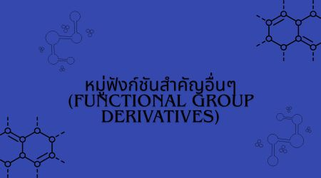

หมู่ฟังก์ชันสำคัญอื่นๆ (Functional Group Derivatives)
1. หมู่ฟังก์ชันที่มีออกซิเจน (O) เป็นองค์ประกอบ
แอลกอฮอล์ (-OH) มีพันธะไฮโดรเจน (H-bond) ทำให้มีจุดเดือดค่อนข้างสูง
อีเทอร์ (-O-) ไม่มีพันธะไฮโดรเจนระหว่างโมเลกุล จุดเดือดค่อนข้างต่ำ และสามารถใช้เป็นตัวทำละลายได้
แอลดีไฮด์ (-CHO) มีหมู่คาร์บอนิลอยู่ปลายสาย และสามารถเกิดปฏิกิริยากับสารรีดิวซ์บางชนิดได้
คีโตน (-CO-) มีหมู่คาร์บอนิลอยู่ตรงกลางสาย และมีสมบัติเฉพาะแตกต่างจากแอลดีไฮด์
กรดคาร์บอกซิลิก (-COOH) เป็นกรดอ่อน มีจุดเดือดสูง และสามารถทำปฏิกิริยากับ NaHCO₃ เกิดก๊าซ CO₂
เอสเทอร์ (-COOR) มักมีกลิ่นหอมคล้ายผลไม้ และสามารถเกิดจากปฏิกิริยาระหว่างกรดคาร์บอกซิลิกกับแอลกอฮอล์
2. หมู่ฟังก์ชันที่มีไนโตรเจน (N) เป็นองค์ประกอบ
เอมีน (-NH₂) มีสมบัติเป็นเบสอ่อน และสารบางชนิดมีกลิ่นเฉพาะตัว
เอไมด์ (-CONH₂) มีสมบัติแตกต่างจากเอมีน และพบเป็นส่วนหนึ่งของโครงสร้างโปรตีน